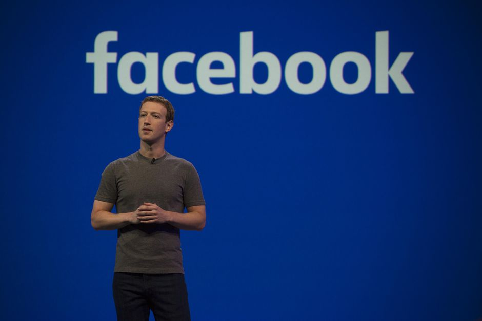

- steve Jobs
- Mark zuckerberg
- Elon musk
Mark Elliot Zuckerberg (/ˈzʌkərbɜːrɡ/; born May 14, 1984) is an American media magnate, internet entrepreneur, and philanthropist. He is known for co-founding Facebook, Inc. and serves as its chairman, chief executive officer, and controlling shareholder.[2][3] He also is a co-founder of the solar sail spacecraft development project Breakthrough Starshot and serves as one of its board members.[4]
Born in White Plains, New York, Zuckerberg attended Harvard University, where he launched the Facebook social networking service from his dormitory room on February 4, 2004, with college roommates Eduardo Saverin, Andrew McCollum, Dustin Moskovitz, and Chris Hughes.[5] Originally launched to select college campuses, the site expanded rapidly and eventually beyond colleges, reaching one billion users by 2012. Zuckerberg took the company public in May 2012 with majority shares. In 2007, at age 23, he became the world's youngest self-made billionaire. As of July 2021, Zuckerberg's net worth is $132 billion,[6] making him the 5th-richest person in the world.[6]
Since 2008, Time magazine has named Zuckerberg among the 100 most influential people in the world as a part of its Person of the Year award.[7][8][9] In December 2016, Zuckerberg was ranked 10th on Forbes list of The World's Most Powerful People.[10]
